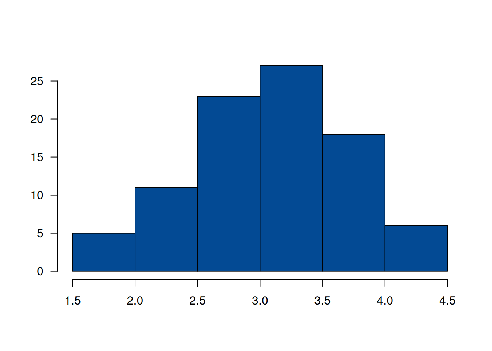
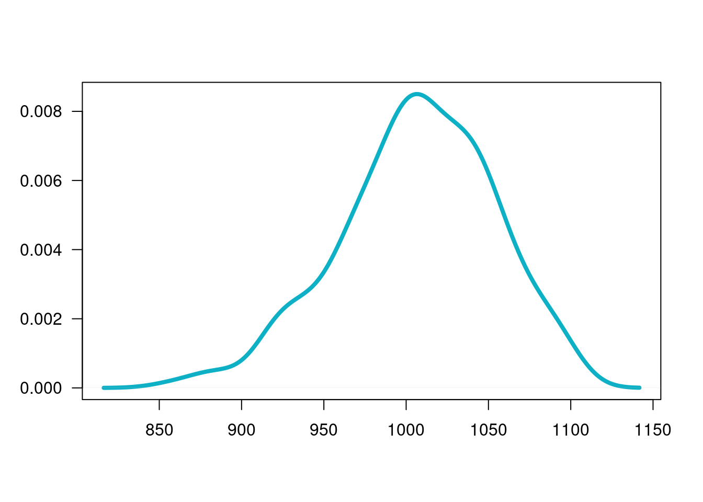
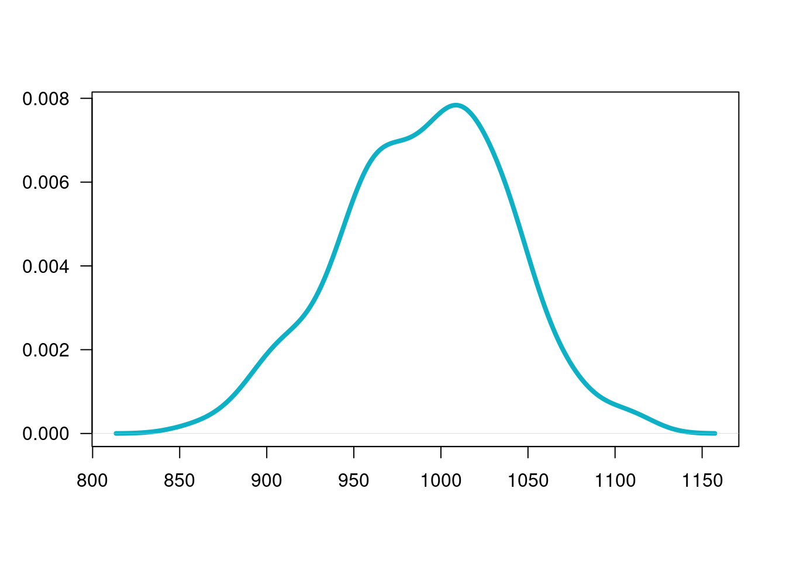

Hasta el momento se han presentado pruebas de hipótesis paramétricas, que exige la estimación de parámetros y de la comprobación de supuestos sobre las distribuciones de las variables, como por ejemplo que se distribuyan normal, distribución que esta relacionada con las distribuciones t-student, chi-cuadrado y F entre otras.
En algunos casos es necesario recurir a las pruebas no paramétricas para el estudio de una media o para la diferendcia de medias tanto de grupos pareados como de grupos independientes debido al incumplimiento de supuestos como se tratará mas adelante.
Cuando no se cumplen los supuestos como Normalidad
Tamaños mínimos de muestra
Número igual de elementos en cada muestra
Homogeneidad de varianza, etc
Cuando se usan tamaños de muestra pequeños
Menores a 30 que no permiten comprobar supuestos sobre la población.
Cuando se convierten datos cualitativas (escalas nominales u ordinales ) a información útil para la toma de decisiones (escala de intervalo). Utilizado en estudios mercadeo para medir variables como gustos, satisfacción, nivel de necesidad etc.
Entre las principales pruebas no paramétricas están :
| No. de grupos de datos | 1 o 2 |
| Variable dependiente | En escala al menos ordinal |
| Objetivo | Esta prueba puede ser utilizada para determinar si la diferencia entre el numero de veces que los datos caen a un lado de la media verdadera es significativamente diferente al número de veces que cae en el otro lado . Determinar si la diferencia entre el numero de veces en que el valor de una variable es mayor que el de la otra y el numero de veces que es menor es estadísticamente significativa. Versión no paramétrica de la prueba t para una muestra o de la prueba t para muestras pareadas. Esta prueba se realiza sobre la mediana de los datos \(Me\). |
Carlos y Ángela, Administradoras investigadores de una firma de artículos deportivos tienen la creencia que el deporte afecta la imagen que cada persona tiene de si misma. Para investigar esta posibilidad eligieron a 18 personas de manera aleatoria, para participar en un programa de ejercicios. Antes de empezar el programa las personas respondieron un cuestionario para medir su propia imagen. Un nivel de 15 puntos en la prueba establece que la persona tiene un concepto indiferente frente a la afirmación, valores menores de 15 que la afecta en forma negativa y valores por encima de 15 que afectan su imagen en forma positiva. Los siguientes son resultados obtenidos : 16, 15, 12, 17, 18, 14, 16, 14, 16, 17, 19, 16, 14, 21, 20, 16, 16, 16 |
x.img=c(16, 15, 12, 17, 18, 14, 16, 14, 16, 17, 19, 16, 14, 21, 20, 16, 16, 16 )| Hipótesis Nula | \(Ho: Me = 15\) |
| Hipótesis Alterna | \(Ha : Me > 15\) |
Estadístico de Prueba : \(M +\) : Numero de signos positivos
| 12 | 14 | 14 | 14 | 15 | 16 | 16 | 16 | 16 | 16 | 16 | 16 | 17 | 17 | 18 | 19 | 20 | 21 |
| - | - | - | - | + | + | + | + | + | + | + | + | + | + | + | + | + |
M+ = 13 Regla de Decisión (Distribución Binomial p=0.5 n= 17) \(P(X\leq 13) = 1-0.9755 = 0.0245\) ( valor-p)
Se rechaza la hipótesis nula, se acepta la hipótesis alterna. Se puede afirmar que las personas tienen la creencia que el deporte afecta positivamente su imagen.
library(BSDA)
SIGN.test(x.img,md=15,alternative = "greater")
One-sample Sign-Test
data: x.img
s = 13, p-value = 0.02452
alternative hypothesis: true median is greater than 15
95 percent confidence interval:
16 Inf
sample estimates:
median of x
16
Achieved and Interpolated Confidence Intervals:
Conf.Level L.E.pt U.E.pt
Lower Achieved CI 0.8811 16 Inf
Interpolated CI 0.9500 16 Inf
Upper Achieved CI 0.9519 16 Inf| Tipo de variable | Cualitativa |
| Número de categorías | \(k > 2\) valores |
| Objetivo | Determinar si la diferencia entre las frecuencias de cada uno de los valores de la variable y unas determinadas frecuencias teóricas son estadísticamente significativas. Utilizada para comprobar el supuesto de normalidad, o de otras distribuciones. |
El dueño de una panadería tiene la posibilidad de controlar los niveles de inventarios de leche para cuatro marcas diferentes. Con el fin de establecer políticas para la realización de nuevos pedidos requiere saber si la demanda de estas marcas son iguales (distribución uniforme). Con este propósito tomo la información de un día:
| Producto | Marca 1 | Marca 2 | Marca 3 | Marca 4 |
|---|---|---|---|---|
| ventas (obs) | 33 | 22 | 21 | 24 |
| prob.esperada (esp) | 0.25 | 0.25 | 0.25 | 0.25 |
| de acuerdo a Ho |
| Hipótesis Nula \(H_o\) : | Las ventas se distribuyen de manera uniforme (cantidad demandada es igual para todas las marcas) |
| Hipótesis Alterna \(H_a\) : | Las ventas no tienen una distribución uniforme |
obs=c(33,22,21,24)
esp=c(0.25,0.25,0.25,0.25)
chisq.test(x=obs,p=esp)
Chi-squared test for given probabilities
data: obs
X-squared = 3.6, df = 3, p-value = 0.308Como el \(valor-p\) es grande, no se rechaza la hipótesis nula, no existe suficiente evidencia en la muestra que permita su rechazo, asimimos que Ho es verdad, la demanda del producto se puede asumir como uniforme. Se puede indicar al encargado de las compras que solicite igual cantidad de producto para cada marca.
Un profesor desea establecer si los resultados obtenidos por sus estudiantes tienen una distribución normal con media 3.5 y desviación estándar 0.7 puntos. Los datos se resumen en la siguiente tabla:
| Hipótesis Nula | \(H_o: X \sim normal\) |
| Hipótesis Alterna | \(H_a: X \hspace{.1cm}\text{ No} \sim normal\) |
nf=c(4.1, 2.7, 3.1, 3.2, 3.0, 3.2, 2.0, 2.4, 1.6, 3.2, 3.1, 2.6, 2.0, 2.4, 2.8, 3.3, 4.0, 3.4, 3.0, 3.1, 2.7, 2.7, 3.0, 3.8, 3.2, 2.2, 3.5, 3.5, 3.8, 3.5, 3.9, 4.2, 4.3, 3.9, 3.2, 3.5, 3.5, 3.7, 4.1, 3.7, 3.5, 3.6, 3.2, 3.1, 3.4, 3.0, 3.0, 3.0, 2.7, 1.7, 3.6, 2.1, 2.4, 3.0, 3.1, 2.5, 2.5, 3.6, 2.2, 2.4, 3.1, 3.3, 2.7, 3.7, 3.0, 2.7, 3.0, 3.2, 3.1, 2.4, 3.0, 2.7, 2.5, 3.0, 3.0, 3.0, 3.2, 3.1, 3.8, 4.1, 3.7, 3.5, 3.0, 3.7, 3.7, 4.1, 3.7, 3.9, 3.7, 2.0)
h=hist(nf, las=1, col=c2, main=" ", xlab=" ", ylab=" ")
lim.nf=h$breaks # cortes de los intervalos
obs.nf=h$counts # valores observados
mx=mean(nf) # media
sdx=sd(nf) # desviación estandar
Fx.nf=pnorm(lim.nf, mx,sdx) # probabilidades en caso de que Ho sea verdadera
prob.nf=Fx.nf[2:7]-Fx.nf[1:6]
esp.nf=prob.nf+0.002300453 # ajuste para que el sum(esp.nf)=1
chisq.test(x=obs.nf,p=esp.nf) # prueba de bondad de ajuste
Chi-squared test for given probabilities
data: obs.nf
X-squared = 2.8988, df = 5, p-value = 0.7156Como el \(valor-p\) es grande, no
existe suficiente evidencia en los datos que permita el rechazo de Ho,
asumimos que Ho es verdad, es decir que la distribución de las notas se
asume normal
Un investigador desea establecer la relación que puede existir entre la calificación obtenida por un producto por parte de sus consumidores y su ubicación de residencia. Con este fin recoge información de 100 de sus clientes:
| \(Ho\) : | Las variables lugar de residencia y calificación son independientes |
| \(Ha\) : | Las variables lugar de residencia y calificación no son independientes |
El siguiente código da solución al constraste de las hipótesis
m=c(20,40,15,11,8,6)
m=as.table(matrix(m,nrow=3))
rownames(m)=c("Bueno", "Regular", "Malo")
colnames(m)=c("Urbano", "Rural")
m Urbano Rural
Bueno 20 11
Regular 40 8
Malo 15 6chisq.test(m)
Pearson's Chi-squared test
data: m
X-squared = 3.7378, df = 2, p-value = 0.1543Como p-value = 0.1543 lo podemos considerar grande, no se rechaza \(Ho\), asumimos que \(Ho\) es verdad, es decir que las variables lugar de residencia y calificación son independientes. Esto implica que la calificación dada por las personas entrevistadas no está relacionada con su calificación.
| No. de grupos | 2 |
| Variable dependiente | En escala al menos ordinal |
| Objetivo | Determinar su la diferencia entre la magnitud de las diferencias positivas entre los valores de las dos variables y la magnitud de las diferencias negativas es estadística mente significativas. Versión no parametrica de la prueba t para muestras pareadas |
Los siguiente datos se tomaron de un estudio de comparación de adolescentes sanos (G1) y de adolescentes con bulimia (G2). El primer grupo está conformado por 15 estudiantes y el segundo grupo por 14 estudiantes y corresponden al consumo diario en calorías. Los datos obtenidos son los siguientes:
Antes de realizar la comparación de medias, se debe realizar una prueba de bondad de ajuste para establecer si los datos siguen una distribución normal o no. En caso de que los datos no tengan distribución normal, entonces se debe realizar una prueba no paramétrica.
| \(H_o\) : \(Me_{g1} \leq Me_{g2}\) | |
| \(H_a\) : \(Me_{g1} > Me_{g2}\) |
g1=c(68,32,58,16,23,53,55,32,61,29,50,64,67,37)
g2=c(39,10,21,29,11,26,7,12,28,32,30,27,50,19,24)
# independent 2-group Mann-Whitney U Test
wilcox.test(g1,g2,paired = FALSE,alternative = "greater")
Wilcoxon rank sum test with continuity correction
data: g1 and g2
W = 178, p-value = 0.0007714
alternative hypothesis: true location shift is greater than 0Se rechaza Ho , se acepta Ha. Se puede concluir que las dos poblaciones son diferentes. por lo tanto las medias son diferentes.
Para analizar cual de los grupos presenta un mayor consumo de calorías, se observa que el Grupo I tiene suma de rangos de 168 y el Grupo II tiene suma de rangos de 273, lo que indica que los datos del Grupo I tienen valores menores en que los del Grupo II
Por lo tanto los estudiantes sanos presentan consumo de calorías menores que los estudiantes que padecen de bulimia.
| Numero de grupos | k |
| Variable dependiente | En escala al menos ordinal |
| Objetivo | Determinar si las diferencias entre las medias de los rangos (asignados a las observaciones ordenadas) en los k grupos son estadísticamente significativas. Versión no parametrica del ANOVA. |
Para verificar si la memoria cambia con la edad, una investigadora realiza un estudio en el cual hay tres grupos de personas: G1- 60 años de edad, G2: con 50 años de edad, G3: con 40 años de edad. A cada persona se le presenta una serie de palabras. La serie es presentada dos veces y se cuenta el número de palabras que pueden recordar.
| Grupo 1 | 28 | 19 | 13 | 28 | 29 | 22 | 21 |
| Grupo 2 | 26 | 20 | 11 | 14 | 22 | 21 | |
| Grupo 3 | 37 | 28 | 26 | 35 | 31 |
| \(Ho\) : | Las poblaciones son idénticas |
| \(Ha\) : | Las poblaciones no son idénticas |
Las anteriores hipótesis implica que sus distribuciones son las mismas (medias y varianzas iguales)
g1=c(28,19,13,28,29,21)
g2=c(26,20,11,14,22,21)
g3=c(37,28,26,35,31)
kruskal.test(g1,g2,g3)
Kruskal-Wallis rank sum test
data: g1 and g2
Kruskal-Wallis chi-squared = 5, df = 5, p-value = 0.4159Se requiere establecer si existe relación entre el tiempo de estudio dedicado a la preparación de una evaluación y la nota obtenida. Como la nota obtenida representa una variable cualitativa, se debe utilizar una prueba no paramétrica (coeficiente de correlación de Spearman). Los datos obtenidos son los siguientes:
| Tiempo | 21 | 18 | 15 | 17 | 18 | 25 | 18 | 4 | 6 | 5 |
| Nota | 4 | 4 | 4 | 3 | 3 | 5 | 3 | 1 | 1 | 2 |
x=c(21,18,15,17,18,25,18,4,6,5)
y=c(4,4,4,3,3,5,3,1,1,2)
plot(x,y, las=1, pch=19, col=c4)
cor.test(x,y, method = "spearman",continuity = FALSE,conf.level = 0.95)
Spearman's rank correlation rho
data: x and y
S = 30.693, p-value = 0.004157
alternative hypothesis: true rho is not equal to 0
sample estimates:
rho
0.8139814 En este caso se utiliza el coeficiente de correlación de Sperman para valorar la relación entre las variables debido a que la nota es una variable que podríamos llamar cualitativa, operacionalizada cuntitativa con una nota.
Para verificar si los números aleatorios generados por Excel son de verdad aleatorios se tomó una muestra de ellos mediante la función =aleatorio.entre(), obteniendo como resultado los siguientes números: 0.738, 0.202, 0.357, 0.561, 0.509, 0.146, 0.746, 0.666, 0.133, 0.430, 0.972, 0.999, 0.499, 0.869, 0.821, 0.732, 0.355, 0.189, 0.478, 0.162 .
| \(Ho\) : | La muestra es aleatoria |
| \(Ha\) : | La muestra no es aleatoria |
library("randtests")
y=rnorm(100,120,20)
runs.test(y)
Runs Test
data: y
statistic = 0.40204, runs = 53, n1 = 50, n2 = 50, n = 100, p-value =
0.6877
alternative hypothesis: nonrandomnessComo el valor-p (0.3149) es mayor al nivel de significancia, no se rechaza la hipótesis nula, no existe suficiente evidencia en la muestra que permita rechazarla, asumimos que los datos son aleatorios.
Uno de los procedimientos mas utilizados en estadística es la relacionada con la verificación de normalidad de una variable.
| \(H_o\): | \(X\) tiene distribución Normal |
| \(H_a\): | \(X\) no tiene distribución Normal |
Existen muchas pruebas que nos ayudan en este propósito, a continuación relacionamos algunas de ellas
# se genera una variable aleatoria normal
x=rnorm(200,1000,50)
plot(density(x), main=" ", las=1, xlab = " ", ylab=" ", col=c3, lwd=4)
shapiro.test(x)
Shapiro-Wilk normality test
data: x
W = 0.9949, p-value = 0.7348Esta prueba no requiere la instalación de paquetes adicionales, pues está disponible en la configuración básica de R
Como el valor-p es superior al nivel de significancia \(\alpha\), no se rechaza \(Ho\), se asume que la distribución de la variable es normal.
# install.packages("normtets")
# library(normtest)
# jb.norm.test(x) # Test de normalidad de Jarque-Bera
# kurtosis.norm.test(x)
# skewness.norm.test(x) # install.packages("nortets")
library(nortest)
lillie.test(x) # Kolmogorov-Smirnov
Lilliefors (Kolmogorov-Smirnov) normality test
data: x
D = 0.044914, p-value = 0.4184pearson.test(x) # chi-cuadrado de Pearson
Pearson chi-square normality test
data: x
P = 13.35, p-value = 0.4992